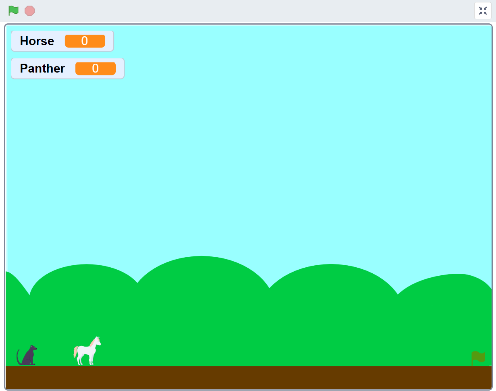
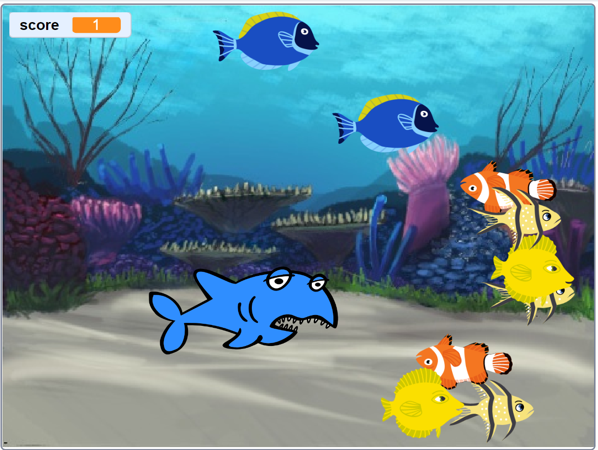
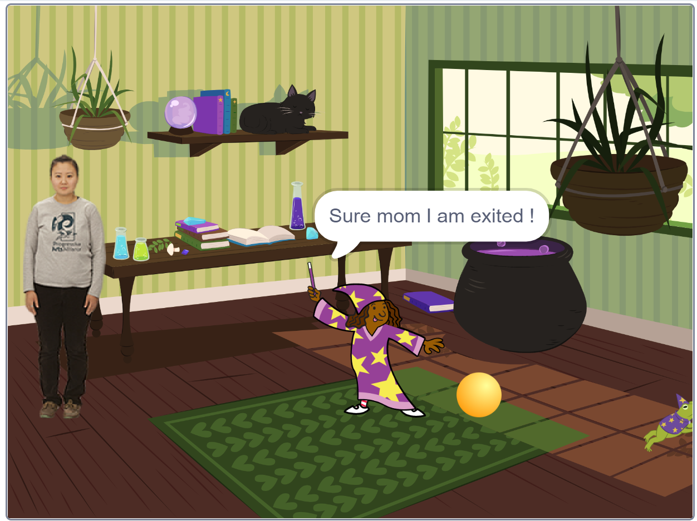

This game tells the story of a panther and a horse in a dramatic chase scenario. The player controls the panther as it swiftly moves through a dense forest, tracking the horse. The challenge is to avoid obstacles while maintaining the chase, requiring quick reflexes and timing.
The game design emphasizes predator-prey interaction, encouraging players to think tactically about approach angles and speed while navigating the terrain.
This game illustrates the importance of balance between strength and agility. It shows how focus, determination, and awareness of surroundings are crucial in overcoming challenges, just as they are in real-life pursuits.

In this aquatic version, a shark chases a school of fish in the deep ocean. The player controls the shark, using strategy and stealth to catch as many fish as possible before time runs out. Underwater dynamics, bubbles, and marine visuals add a vivid touch to the experience.
The game is built using logical loops and collision detection, making it both fun and technically sound from a coding perspective. It also educates players about the ocean food chain in an interactive way.
It highlights the survival instincts in nature and teaches that raw power must be complemented by timing and precision. It’s not always the biggest creature that succeeds, but the smartest one.

The storytelling segment was integrated to give context and emotional depth to the games. It shows how code can narrate tales, build tension, and offer engaging experiences through visuals and interactions. This section helped participants connect their coding logic with creative storytelling.
Scan this QR code to try the game on your smartphone. This mobile-compatible version ensures accessibility and allows players to experience interactive coding outputs anytime, anywhere. It reflects how classroom learning can evolve into real-world applications.